Home ／ 第5回
LESSON 05 ／ 作るフェーズ
API 連携で AI 機能を入れ、データの持ち方を決める
～ 自分のアプリから AI のサービスを呼び出し、データをどこに置くかを仕組みと消える条件から選ぶ ～
- Claude デスクトップアプリを使います
- AI のサービスの契約（Claude／OpenAI／Gemini のどれか）が要ります
- 成果物：AI 機能が1つ動くアプリ＋スクショ（上限・.gitignore・保存が残る画面）＋書き換えた spec.md
- この回で初めて、データが自分の PC の外に出ます
01
API 連携とは
API とは、他のプログラムやサービスの機能を、決められた形式の要求を送って使う仕組みです。要求の送り先（URL）、送る内容の形、返ってくる内容の形があらかじめ決まっていて、その決まりに従って送れば、相手のプログラムを自分のアプリから動かせます。API 連携は、自分のアプリの中から外部サービスの API を呼び出して、その結果を自分の画面に使うことです。
用語
- API
- Application Programming Interface の頭文字。プログラムから別のプログラムやサービスの機能を呼び出すための、決められた呼び出し方。送り先の URL、送る内容の形、返る内容の形が決まっています。
- リクエスト／レスポンス
- リクエストは API に送る要求。レスポンスはそれに対して返ってくる答え。API の呼び出しは、この1往復で成り立ちます。
- URL
- インターネット上の場所を表す文字列。ブラウザのアドレス欄に入れるものと同じです。API では「どこに要求を送るか」を表します。
- JSON
- データを決まった書き方の文字で表す形式。項目名と値の組を
{ "amount": 500, "memo": "昼食" }のように書きます。API のリクエストとレスポンスの多くはこの形です。
ふだん使っているアプリも、裏では API を呼んでいます。たとえば、天気アプリは気象情報のサービスの API から今日の予報を受け取って表示し、地図アプリは経路検索の API に出発地と目的地を送って経路を受け取っています。AI 機能も同じ形で、自分のアプリから AI のサービスの API に文章を送り、生成された文章を受け取って画面に出します。
API 連携をするときの形（この回でいちばん大事なこと）
自分のアプリから AI のサービスを呼ぶときは、画面（ブラウザ）から直接呼ばず、自分のサーバーを経由します。
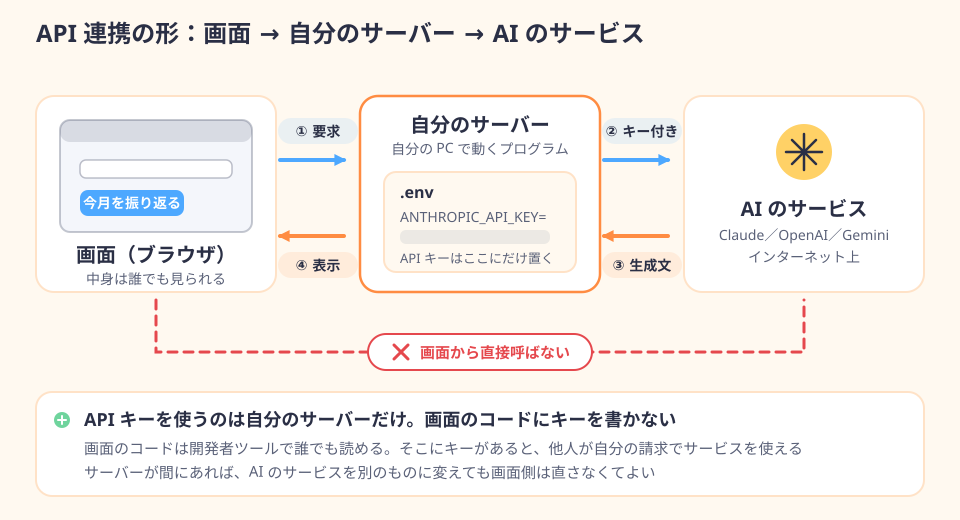
用語
- 画面側（フロントエンド）
- ブラウザの中で動く部分。HTML／CSS／JavaScript でできていて、その中身は開発者ツールで誰でも見られます。
- サーバー側（バックエンド）
- 利用者から見えない場所で動く部分。自分の PC で
node server.jsのように起動しているプログラムがこれに当たります。秘密の文字列を使う処理や、ファイルの読み書きはここで行います。 - 開発者ツール
- ブラウザに標準で付いている、画面の中身や通信の内容やエラーを調べる機能。Chrome では F12（Mac は ⌥⌘I）で開きます。
なぜサーバーを経由するのか
- AI のサービスを呼ぶには、03 で扱う API キーが要ります。画面側のコードに書くと、開発者ツールで誰でもそのキーを読めます（読まれると何が起きるかは 03 で説明します）
- サーバー側に置いたキーは、画面に返す内容やエラー表示に含めなければ、ブラウザからは見えません。キーを使う処理は、必ず見えない場所に置きます
- 自分のサーバーを間にはさんでおくと、あとで AI のサービスを別のものに変えるときも、画面側は一切直さずに済みます
この回の流れ（上から順に進めます）
API を知る
呼び出しの形と、サーバー経由の理由
サービスを選ぶ
Claude／OpenAI／Gemini
キーを発行
管理画面で作り、.env に置く
土台を作る
いまの画面をサーバーから開く
経路を先に通す
AI を呼ばずに固定の文章を返す
AI に差し替え
サーバー側だけを直す
上限を設定
管理画面で使いすぎを止める
データの持ち方
4つの置き場から選ぶ
02
AI のサービスを選ぶ：Claude／OpenAI／Gemini
AI の API を提供しているサービスのうち、このゼミで扱うのは次の3つです。特定の1社を推奨はしません。キーを発行して .env に置き、サーバー側から呼ぶ、という流れは3つとも共通です。支払いと上限の設定はサービスごとに違うので、選んだサービスの節を読みます。
| サービス（提供元） | 管理画面の名前 | 開く場所 |
|---|---|---|
| Claude API（Anthropic） | Claude Platform（旧 Claude Console） | platform.claude.com（console.anthropic.com を開いても、ここへ転送されます） |
| OpenAI API（OpenAI）。ChatGPT と同じ提供元のモデルを API で使う | OpenAI Platform | platform.openai.com |
| Gemini API（Google） | Google AI Studio | aistudio.google.com |
表は横にスクロールできます
料金と無料で使える範囲は短い期間で変わるので、契約の前に、必ず各サービスの公式ページでご確認ください。このページに載せる無料枠の数値は、記載した日に講師のプロジェクトで確かめた例です。自分に当てはまる回数は、Gemini なら AI Studio の「レート制限」で確かめます。
選ぶときに見る4つの観点
- 費用
- 見るところ無料で試せる範囲があるか。先にクレジットを買う前払いか。無料枠で送った内容がサービスの改善に使われるか（Gemini の無料枠は使われます。05 の「AI に送ってよい情報の実物確認」）
- なぜ作っている途中で何度も呼びます。試す段階で費用がかかると手が止まります
- 扱える入力
- 見るところ文章だけか、画像や PDF も渡せるか
- なぜ変換型で「写真から読み取る」ような機能を考えているなら、ここで決まります
- 上限設定
- 見るところ管理画面に「月にここまで」という上限を置けるか。超えたときに止まるのか、通知だけか
- なぜ作りを間違えて何度も呼ばれたとき、被害を金額で止められます
- 日本語の出力
- 見るところ自分の用途の文章が自然に返ってくるか
- なぜ要約や言い換えは、日本語の品質がそのまま使いやすさになります
用語
- モデル
- 呼び出す AI の種類。同じサービスの中に、速いもの・賢いもの・安いものなど複数あり、名前を指定して呼び分けます。名前は変わることがあるので、公式ページで確認します。
- トークン
- AI のサービスが文章を数える単位。送った文章と返ってきた文章の両方がトークンで数えられ、料金はその数で決まります。日本語は1文字が1トークン以上になることが多いです。
- 無料枠
- 契約直後や一定量までは無料で使える範囲。あるかどうか、どこまでかはサービスごとに違い、変わることがあります。
- 上限設定
- サービスの管理画面で「月あたりここまで」と決めておく設定。超えたときに呼び出しが止まるか、通知だけかは、サービスと設定で違います。設定した画面で確かめます。
- レート制限
- 短い時間に送れる要求の回数の上限。1分あたり・1日あたりのように決まっていて、超えると一時的にエラーになります。無料枠では少なく設定されています。
- 前払い（クレジット）
- 先に金額を入れておき（この金額をクレジットと呼びます）、その範囲で使う方式。残高が少なくなると自動で買い足す設定（自動リロード）をオフにしておけば、残高が尽きたところで呼び出しが止まります。
なぜ推奨を置かないのか：料金も無料枠も短い期間で変わります。1社を推奨として固定すると、条件が変わったときに全員が不利な選択をしたままになります。観点を渡して、その時点でご自身に合うものを選べる状態にしておきます。
03
API キー：パスワードと同じ扱いをする
API キーは、そのサービスに「自分として」アクセスするための長い文字列です。これを付けて要求を送ると、サービスは「この人からの要求」と判断し、使った分をその人に請求します。
用語
- API キー
- サービスが発行する、本人確認のための長い文字列。
sk-ant-…（Claude）、sk-…（OpenAI）、AQ.…（Gemini。以前に作られたキーはAIza…）のような決まった文字で始まることが多いです（形式は変わることがあります）。 - .env
- API キーのような秘密の文字列を書いておくファイル。アプリのフォルダの直下に置きます。名前は「環境（environment）」の略です。
- 環境変数
- プログラムの外側から渡す設定値。
.envに書いた内容は、起動時に環境変数として読み込まれ、サーバー側のプログラムからprocess.env.ANTHROPIC_API_KEYのような名前で取り出せます。 - .gitignore
- 共有の場所に上げないファイルの名前を書いておく一覧。ここに
.envを書いておくと、コードを共有するときに.envだけが除かれます。 - node_modules
- アプリが使う部品（ライブラリ）を入れるフォルダ。部品を入れる命令を打つと自動で作られ、中身はとても多くなります。部品の一覧があればいつでも作り直せるので、共有や提出には含めません。
① 画面側のコード（HTML や JavaScript）に書く
② GitHub などコードを共有する場所に上げる
③ スクリーンショットに写ったまま提出する・掲示板に貼る
なぜ画面側に書いてはいけないのか：ブラウザで動くコードは、開発者ツールを開けば誰でも読めます。キーが読まれると、他人がご自身の請求でそのサービスを使い放題になります。キーは「使うと請求が来るパスワード」であって、設定値ではありません。
なぜスクリーンショットまで気にするのか：管理画面でキーを作った直後の画面や、.env を開いた画面をそのまま撮ると、キーの全文が写ります。掲示板や提出物に貼った時点で、見た人全員がそのキーを使えます。
キーが写ってしまったときの対処：まだどこにも貼っていなければ、キーが写らない範囲で撮り直します。一度でも掲示板・提出フォーム・共有の場所に出したら、貼り直すのではなく、管理画面でそのキーを無効化して作り直します。なぜ出したら作り直すのか：貼った画像を消しても、消すまでの間に見た人や、画像を保存した人の手元にはキーが残ります。無効化すれば、そのキーで送られた要求はすべて断られます。
キーの置き方（この順で）
- 1
下の指示の型を Claude Code に送り、
.gitignoreを先に用意してから、値が空の.envを作らせるなぜ先に .gitignore か：
.envを先に作ると、.gitignoreを確かめる前に共有の場所へ上がる事故が起きます。上げない設定を先に済ませてから、キーの置き場を作ります。 - 2
04 でキーを発行したら、
.envの=の後ろに自分で貼るANTHROPIC_API_KEY=sk-ant-…のように、=の前がプログラムから呼ぶときの名前、後ろが発行したキーです。引用符も空白も付けません。開き方は、この節の最後に書きます。 - 3
サーバー側のプログラムからだけ読む
画面側からは読めないのが正しい状態です。なぜ：画面側から読めるなら、開発者ツールで誰でも読めるということだからです。
| サービス | .env に書く名前（例） | 公式の説明で確認するもの |
|---|---|---|
| Claude API | ANTHROPIC_API_KEY | キーの発行場所・モデル名・上限設定の場所 |
| OpenAI API | OPENAI_API_KEY | 同上 |
| Gemini API | GEMINI_API_KEY | 同上 |
表は横にスクロールできます
手順1で Claude Code に送る指示の型です。（ ）の中は、上の表から選んだサービスの名前に差し替えます。
APIキーを安全に置く準備をしてください。まだAIは呼びません。 1. アプリのフォルダ直下に .gitignore が無ければ作り、.env と node_modules の2行を入れてください（あれば追記） 2. 1が終わってから、同じ場所に .env を作ってください。中身は （ANTHROPIC_API_KEY）= の1行だけで、値は空のままにしてください。キーは私が自分で貼ります 3. .env を作ったあとは、.env の中身を読まないでください（読むと、私が貼ったキーがこのやり取りの記録に残るため） 完成条件：.gitignore に .env と node_modules が入っていること。.env が （ANTHROPIC_API_KEY）= の1行だけで、値が空であること。
なぜキーは自分で貼るのか：キーの文字列を Claude Code の入力欄に貼ったり、キーを貼ったあとの .env を Claude Code に読ませたりすると、キーがやり取りの記録に残ります。キーはご自身の手でファイルに貼り、AI には「.env から読む」とだけ伝えます。
.env の開き方：名前が . で始まるファイルは、ふだんは隠れていて見えません。
- Mac：Finder でアプリのフォルダを開き、⌘＋⇧＋.（Command＋Shift＋ピリオド）を押すと、
.で始まるファイルが見えるようになります。.envを「テキストエディット」で開いてキーを貼り、保存します - Windows：
.envを「メモ帳」で開いてキーを貼り、保存します。「名前を付けて保存」になったときは、「ファイルの種類」を「すべてのファイル」にしてから、名前を.envのまま保存します。なぜ：「テキスト文書」のまま保存すると.env.txtという名前になり、プログラムが読みません
04
各サービスでキーを発行する
3つとも「ログイン → API キーの画面 → 作成 → 表示されたキーをその場で .env に貼る」の流れです。キーは作った直後にしか全文が表示されないサービスが多いです。画面を閉じる前に .env に貼り、貼れたことを確認してから閉じます。選んだサービスの節だけ読めば足ります。
4-1. Claude API（Anthropic）
- 1
platform.claude.com（Claude Platform。旧 Claude Console）を開き、Google アカウントかメールアドレスでログインする
なぜ：API キーはアカウントに紐づきます。ゼミで使っている Claude と同じアカウントでログインできます。ただし Claude の有料プラン（Pro など）に API の利用は含まれず、API は Claude Platform の「請求」で別にクレジットを買います。
- 2
「使用クレジットを購入して開始する」が出たら、ここでは買わず「今はスキップ」
なぜ：AI を呼ぶまでは費用はかからないため、買うのは経路が通ってからにします。左のメニュー「組織の設定」→「API キー」を開きます。
- 3
「キーを作成」を押し、名前と有効期限を決めて「キーを作成」
途中で「ID 連携を使用すれば、API キーは不要です」という案内が出たら「API キーで続ける」を選びます（ID 連携はクラウド上で動かす場合の仕組みで、ご自身の PC で動かすアプリには使いません）。キーの全文が1回だけ表示されるので、その場で
.envに貼ります。 - 4
（5-2 の手順3 で「テスト応答です」が出たら）「請求」の画面でクレジットを購入し、自動リロードはオフのまま、「Spend limits」で月の上限を置く
Claude API は前払いで、買ったクレジットの範囲で使います。最初は少額で十分です。購入のときに「自動リロード（Auto-reload）」を入れる欄があれば、オフのままにします。なぜ：自動リロードを入れると、残高が減るたびに自動で買い足され、残高が上限の役目をしなくなります。
あわせて、同じ「請求」の画面の「Spend limits」で「Set limit」（設定済みなら「Adjust limit」）を押し、月の上限額を入れます。なぜ両方か：月の上限に達すると、その月の呼び出しはエラーで止まります。残高と月の上限の2つで止めておけば、どちらかの設定を変えたときにも使いすぎを防げます。金額の選択肢と画面の文言は変わることがあります。
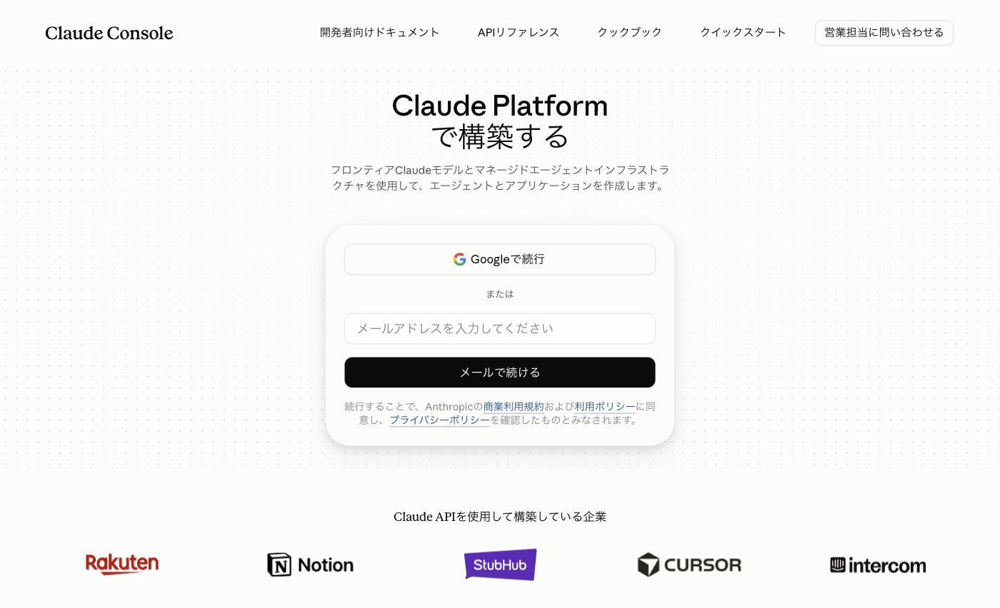
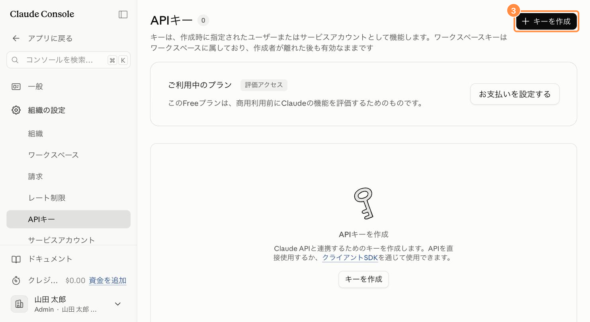
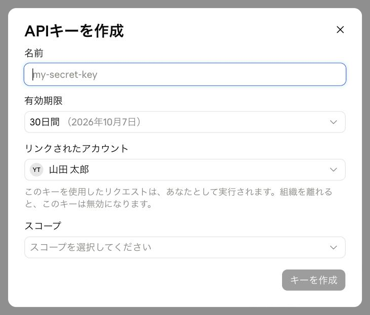
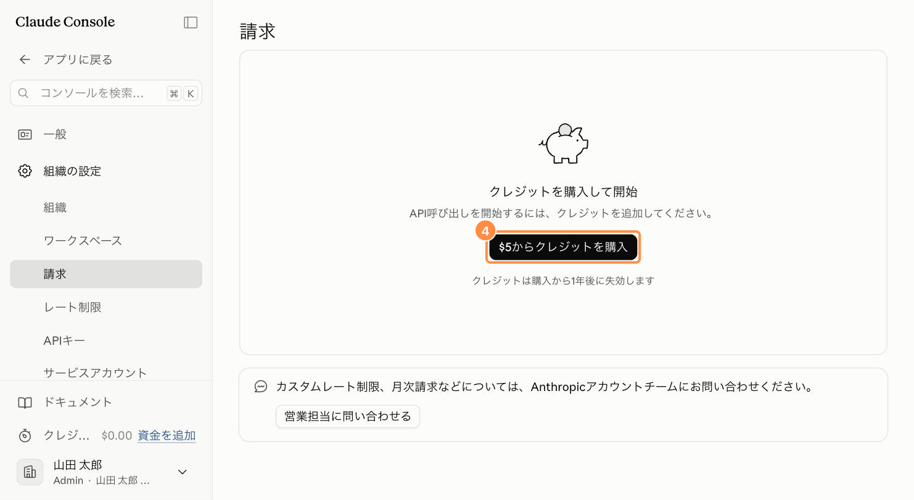
4-2. OpenAI API（OpenAI）
- 1
platform.openai.com を開き、ログインする
ChatGPT を使っているアカウントでログインできますが、ChatGPT の有料プランと API の契約は別で、API は先にクレジットを買い、その残高から使った分が引かれます。なぜ確認するのか：ChatGPT の月額を払っていれば API も使えると思って作り始め、残高が無いというエラーで止まる人が多いためです。
- 2
左のメニュー「API Keys」→ 右上の「Create new secret key」
名前を付け、Permissions は「All」のまま「Create secret key」を押します。なぜ All か：「Restricted」を選ぶと使える機能を絞れますが、AI を呼ぶ権限を付け忘れると、正しいキーでもエラーになります。まずは All で動かします。キーの全文が1回だけ表示されるので、その場で
.envに貼ります。 - 3
「Settings」→「Billing」で支払い方法を登録し、クレジットを買う
画面に「API credits are separate from ChatGPT」（API のクレジットは ChatGPT とは別）と書いてあるとおり、ChatGPT の契約とは別に、ここで API 用の残高を入れます。なぜ：残高が 0 のままでは、キーが正しくても API を呼べません。最初は少額で十分です。
- 4
「Settings」→「Limits」（Billing の「Usage limits」からも開けます）の「Spend」で「Edit spend limit」を押し、月の上限額を入れて「Enforce a hard limit」をオンにして保存する
支払いを登録してクレジットを買うと、「Limits」の画面に上限の欄（Spend）が出ます。登録前の画面には、購入額に応じた段階（Usage Tiers）と、1分あたりに送れる回数（レート制限）だけが出ています。なぜ「Enforce a hard limit」までオンにするのか：オフのままだと、上限額に達してもメールが来るだけで呼び出しは止まりません。オンにすると、上限を超えたあとの呼び出しがエラーで止まります。止まるまで少し遅れることがあり、記録上の金額がわずかに上限を超えることがあります。画面の文言は変わることがあります。
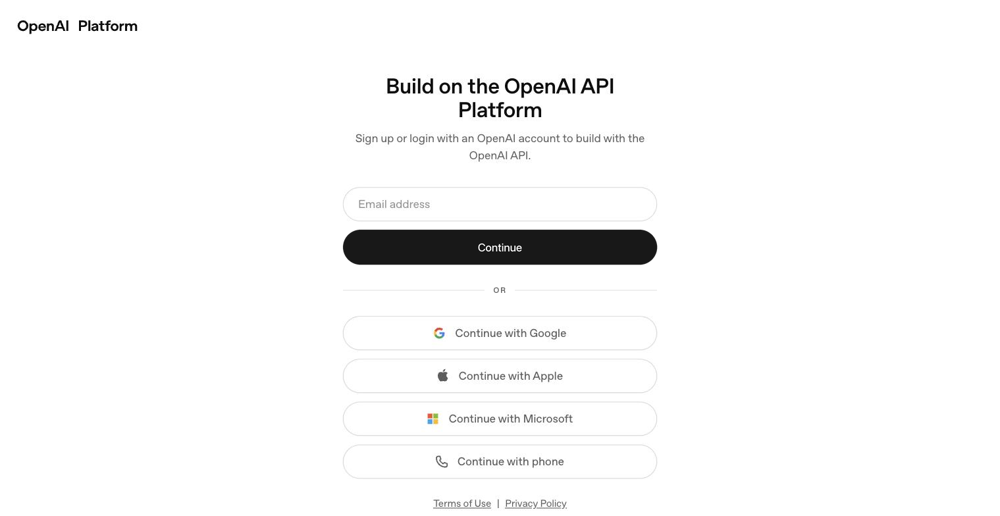
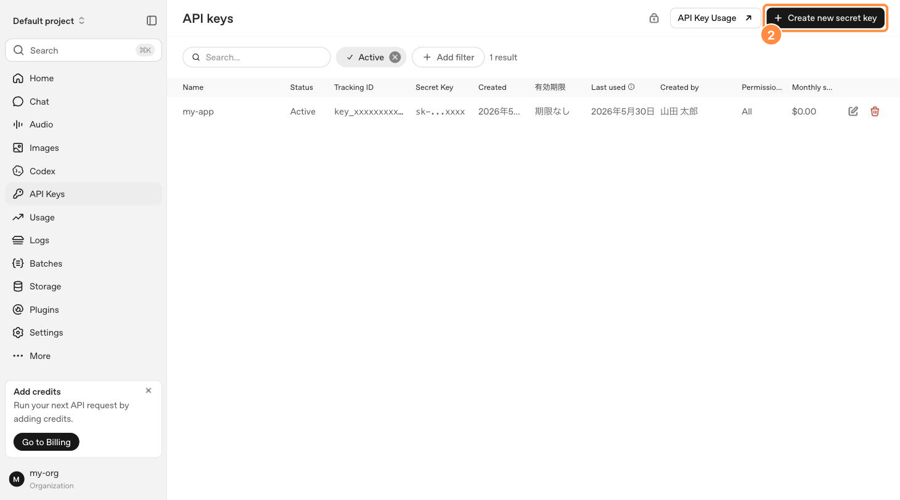
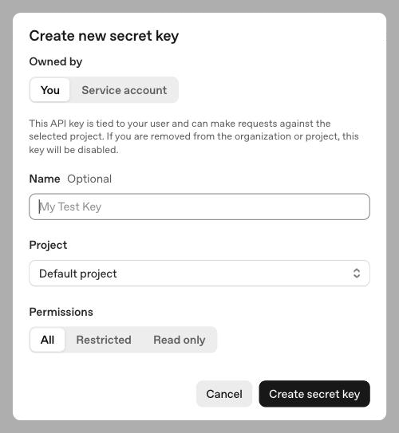
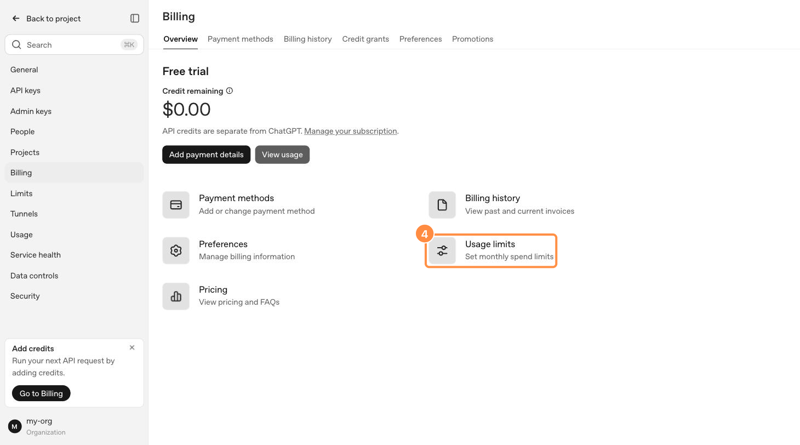
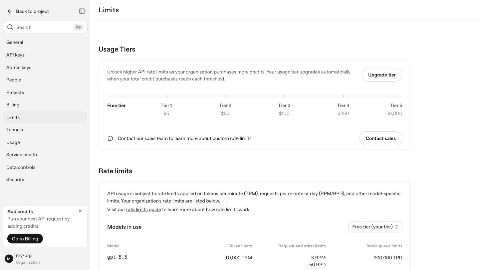
4-3. Gemini API（Google）
- 1
aistudio.google.com を開き、Google アカウントでログインする
左のメニューに「API キー」があります。
- 2
右上の「API キーを作成」を押し、名前とプロジェクトを決めて「キーを作成」
初めてなら用意されている「Default Gemini Project」のままで構いません。なぜプロジェクトを聞かれるのか：Google はキーや使用量を「プロジェクト」という単位で管理します。アプリ1つに1プロジェクトが基本ですが、まずは既定のもので進めて差し支えありません。表示されたキー（新しいキーは
AQ.で始まります）はその場で.envに貼ります。一覧に戻ると、作ったキーは末尾の数文字だけが表示されます。 - 3
左のメニュー「課金」で支払い方法の設定を確かめ、設定したら「利用額」で月の上限を置く
Gemini API は支払い方法を設定しなくても無料枠の範囲で使い始められます（範囲は変わることがあります。「レート制限」の画面で確認できます）。無料枠のまま使う場合は、支払い方法が無いので上限を置く対象がありません。無料枠の回数を超えた呼び出しは、請求されずにエラーで止まります。
支払いを設定したら、左のメニュー「利用額」の「月の使用上限（Monthly spend cap）」→「Edit spend cap」で上限を置きます。自動で買い足す設定（自動リロード）を使うなら、「課金」で自動リロードの月の上限（Monthly auto-charge limit）も決めます。なぜ：前払いの残高とは別に月の上限を置いておけば、作りを間違えて何度も呼ばれても、その金額で止まります。この上限は Google が試験中の機能として出しているもので、反映に10分ほど遅れるあいだは上限を超えることがあります。 - 4
「使用量」の画面で、要求の回数とエラーの回数を見る
AI 機能を入れたあと、この画面を1日1回は見る習慣を付けてください。なぜ：作りを間違えて何度も呼ばれている場合、ここの回数が想定と桁違いになります。請求が来てから気づくのでは遅いためです。
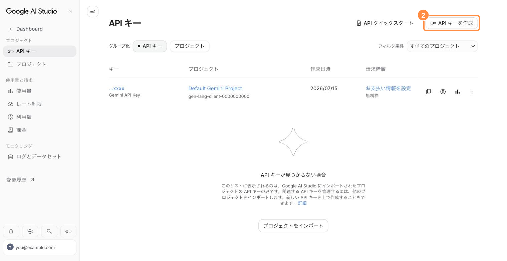
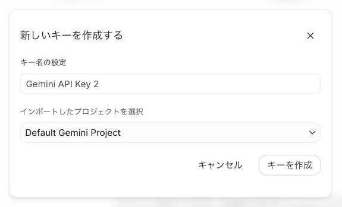
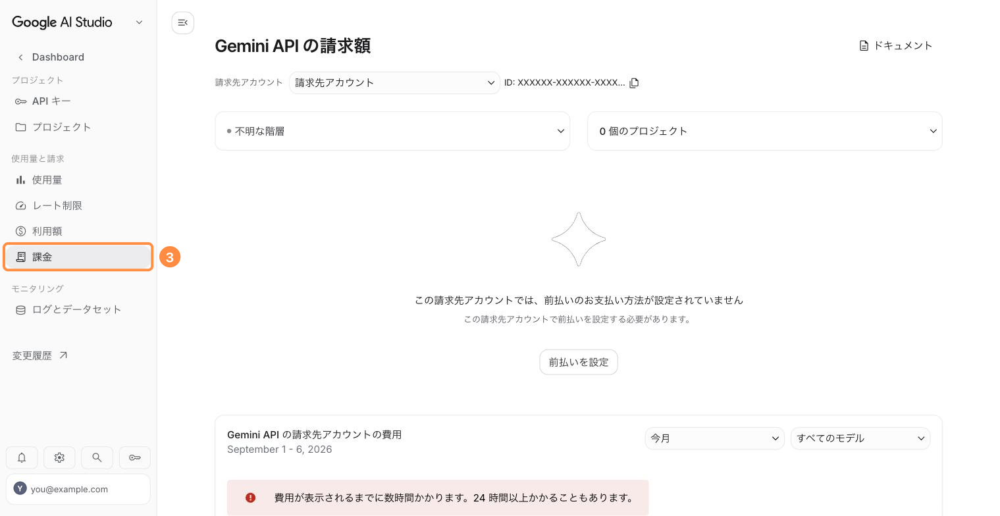
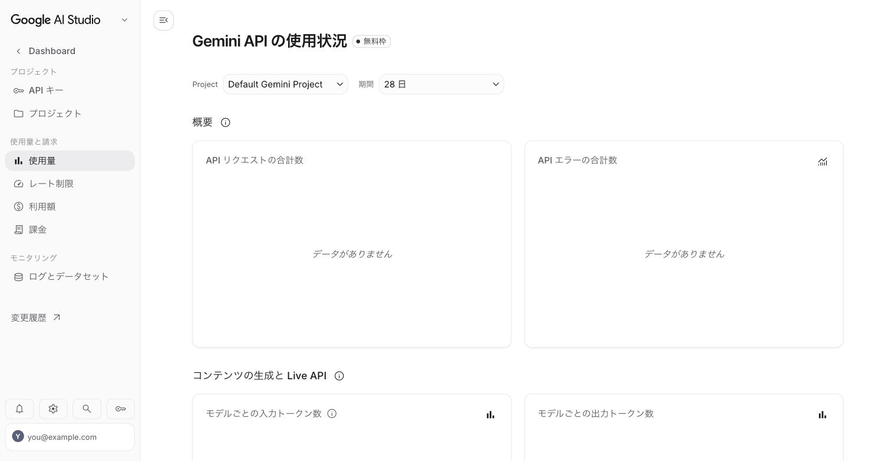
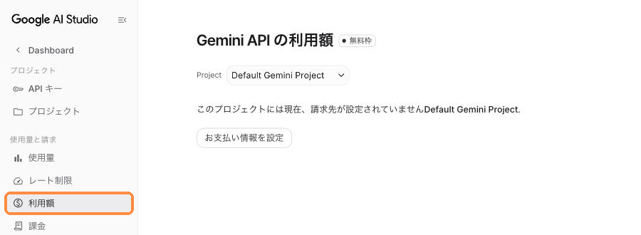
gemini-3.5-flash-lite と gemini-3.8-flash の2つで、どちらも無料枠があります（gemini-3.8-flash は、無料枠で1日に呼べる回数が少なめです）。このページでは、軽くて回数の多い gemini-3.5-flash-lite を使います（2026年9月24日に講師のプロジェクトで確かめたとき、無料枠は1日500回でした）。gemini-2.5-flash などの 2.5 系は、廃止ではありませんが、2026年9月18日の Gemini API の変更履歴で、以前から使っていた人だけが使えるものになりました。新しく始める人が呼ぶと 404（no longer available to new users）で止まります。Claude Code が 2.5 系の名前を書くことがあるので、指示の中でモデル名を渡します。ライブラリは Google の新しいもの（JavaScript は
@google/genai、Python は google-genai）を使います。古いライブラリは 2025年11月30日に非推奨になりました。名前は変わることがあるので、最新は Gemini API の公式のモデル一覧で確かめます。
用語
- Google Cloud のプロジェクト
- Google のサービスで、キーや使用量や請求をまとめる単位。Gemini のキーはどれかのプロジェクトに属します。
- ステータスコード
- API が答えと一緒に返す3桁の番号。何が起きたかの種類を表します。たとえば
401＝キーが違う・読めていない、404＝送り先（モデル名など）が見つからない、429＝回数や残高の上限に当たった、です。
05
AI 機能を入れる：経路を先に通してから、中身を差し替える
ここでやるのは「自分のアプリのサーバー側から AI のサービスに文章を送り、返ってきた文章を画面に出す」ことです。次の順番を崩さないでください。最初に、いまの画面をサーバーから開けるようにして土台を作り（5-1）、そのうえで経路を通して AI に差し替えます（5-2）。画面の中だけで動く動き（ボタンを押すと一覧や結果の欄が変わる部分）は、もうできている前提で進めます（まだ無い場合は、5-1 の最後で1つ足します）。
5-1. まず、いまの画面をサーバーから開けるようにする
docs/tasks.md がある場合、画面の中だけでできるタスク（例：「1件保存して一覧に出す（読み込み直すと消えてよい）」「入力の間違いを弾く」）は、動きの一覧 docs/actions.md でその動きが「作った」になっていれば、もう終わっています。06（データの持ち方）は、「消えずに残るようにする」のような、データを残すタスクに当たります。tasks.md の順番と見比べて、終わったタスクには Claude Code に終わった印（- [x]）を付けさせます。なぜ：印が実物とずれていると、次に作り始めるときに、できているものをもう一度作らせることになります。
いまのアプリは、app/ の中の HTML と CSS に、画面の中だけで動く JavaScript（例：app/app.js。AI を使うアプリは、仮の文章を返す app/ai.js も）が付いた状態です。ボタンを押すと画面は変わりますが、データは画面の中に持っているだけで、外のサービスにはつながっていません。AI のサービスを呼ぶには、次の2つが要ります。
- 自分のサーバーへ要求を送り、返ってきた答えを画面に出す部分（画面側の JavaScript。いまの動きに足す）
- その要求を受け取って、外部のサービスを呼ぶ部分（サーバー側のプログラム）
この 5-1 では、まずサーバーを立てて、いまの画面をサーバーから開けるようにします。要求を送る部分は 5-2 で足します。
アプリは「見た目 → 動き → 裏側」の順に1段ずつ足して作ります。見た目と、画面の中だけで動く動きができていれば、ここで足すのは裏側だけです。なぜ1段ずつか：一度に全部を作らせると、うまくいかないときに、見た目・動き・裏側のどこが原因か分かりません。1段足すたびに確かめておけば、先に調べるのは最後に足した1段で済みます。
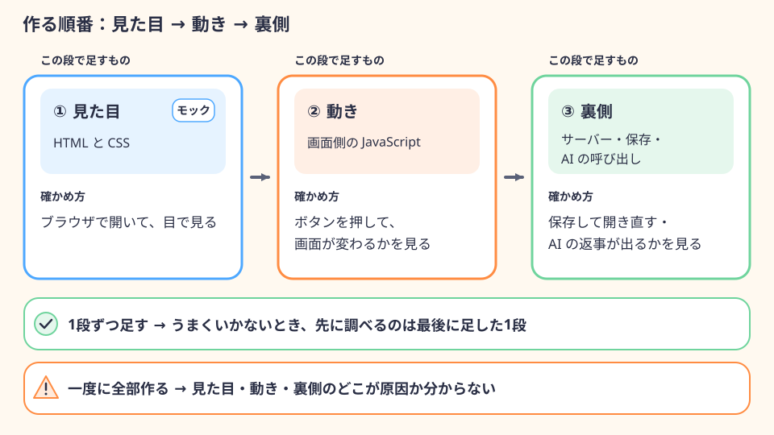
なぜ画面を作り直さないのか：いまある HTML と CSS は、ご自身で見て決めた配置と見た目そのものです。動きがある場合は、それもご自身の手で押して確かめたものです。作り直させると配置も文言も動きも変わり、確かめ直しになります。足すのはサーバーと、画面からサーバーを呼ぶ処理だけで、画面のファイルは土台としてそのまま使います。
仕様書の「使う技術」で、HTML をそのまま使わない構成（React など）を選んだ場合は、いまの画面の配置・文言・色・余白を変えずに、その構成の書き方へ移させます。
用語
- 動き
- ボタンを押す・文字を入れるといった操作を受け取って、画面の中身を書き換える仕組み。画面側の JavaScript で作り、サーバーが無くても動きます。
- 動きの一覧（docs/actions.md）
- 画面に付ける動きを、1行に1つずつ並べた表のファイル。「状態」の欄は「まだ」（まだ作っていない）・「作った」・「あとで」（データを残す・画面をまたいで渡す・本物の AI を呼ぶ、のどれかが要るので後回しにした）のどれかです。「確かめ方」の欄に、その動きを自分の手で確かめる手順が書いてあります。
- 仮の文章
- 本物の AI の代わりに返す、決まった文章。AI のサービスにつなぐ前に、「押す → 待つ → 出る」の流れを画面で確かめるために使います。
- モック
- 見た目だけを作った画面。動きや保存の仕組みは入っていません。
- Node.js
- JavaScript をブラウザの外（PC の上）で動かすための土台のソフト。サーバー側のプログラムを動かすのに使います。
- localhost
- 自分の PC 自身を指す名前。
http://localhost:3000は「自分の PC の中で動いているサーバーの 3000 番の入口」の意味です。インターネットには公開されていません。 - ターミナル
- 文字で命令（コマンド）を打ち込み、結果を文字で受け取る画面。
- コンソール
- 開発者ツールの中の、JavaScript のエラーや記録が文字で出る欄。動きが止まった理由は、ここに赤い文字で出ます。開発者ツールの上の「コンソール」（英語の表示では「Console」）を押すと開きます。
サーバーを立てて、いまの画面をそのまま出す（指示①）
- 1
Node.js が入っているかを Claude Code に聞く
「この PC に Node.js が入っているか確かめてください。入っていなければ、入れ方を教えてください」と送ります。入っていなければ、公式サイト（nodejs.org）の案内に従って入れます。画面の文言は変わることがあります。なぜ：サーバー側のプログラムは Node.js の上で動きます。入っていないと、次の指示で作ったサーバーを起動できません。
- 2
下の指示①を送る
そのまま貼って送ります。返事に出てくる「起動のしかた・止めかた・開くアドレス」は、このあと何度も使うので控えておきます。なぜ：
.envを直したときなど、サーバーを止めて起動し直す場面がこの先に何度もあるためです。
docs/spec.md の「使う技術」に沿って、サーバーを1つ作ってください。 - いまの app/ の HTML・CSS・JavaScript は作り直さず、そのまま使ってください。要素の並び・文言・style.css・いまの動きは変えないでください - まずは、app/ の中のファイルをそのままブラウザに返すだけのサーバーにしてください。保存や AI の処理はまだ作りません - 起動のしかたと、止めかたと、ブラウザで開くアドレスを教えてください 完成条件：サーバーを起動して、教えてもらったアドレスをブラウザで開くと、いままでと同じ画面が同じ見た目で出ること。いままでの動きも、ダブルクリックで開いていたときと同じに動くこと。
なぜ「同じ見た目で出ること」「同じに動くこと」を完成条件にするのか：ファイルの置き場所や読み込み方が変わると、style.css が読み込まれずに色が消えたり、JavaScript のファイル（例：app/app.js）が読み込まれずに、押しても何も起きなくなったりすることがあります。ここで気づけば、直すのは1か所で済みます。
確認：ブラウザのアドレス欄が、ファイルの場所ではなく http://localhost:3000 のような形になっています。ここから先は、HTML ファイルをダブルクリックして開くのではなく、サーバーを起動してこのアドレスで開きます（なぜ：ファイルを直接開いた画面からは、自分のサーバーに要求を送れません）。
いままでの動きを、サーバーから開いた画面で確かめる
画面に動きがある方（動きの一覧 docs/actions.md に、状態が「作った」の行がある方など）は、指示①のあと、ここで確かめます。画面にまだ動きが無い方は、この下の「画面にまだ動きが無いときだけ」へ進みます。
- 1
サーバーを起動し、指示①で教えてもらったアドレス（
http://localhost:3000など）で画面を開くダブルクリックで開いた画面が残っていたら、閉じておきます。なぜ：確かめたいのは、サーバーから開いた画面で動くかどうかです。ダブルクリックで開いた画面（アドレスが
file://で始まる）が残っていると、どちらで押したのか分からなくなります。 - 2
docs/actions.mdの「作った」の行をいくつか選び、その行の「確かめ方」のとおりに押す1行目（いちばんよく使う動き）と入力のチェックの行、AI を使うアプリなら「処理中」「失敗したとき」の行は、必ず入れます。ダブルクリックで開いていたときと同じに動けば合格です。動きの一覧が無い場合は、ダブルクリックで開いていたときに確かめた操作を、同じように押します。なぜ：開き方を変えると、ファイルの読み込み方も変わります。JavaScript のファイルが読み込まれないと、見た目は同じでも、押しても何も起きない画面になります。よく使う動きと、AI の部分（例：
app/ai.js）を通る行を押せば、読み込みの抜けに気づけます。 - 3
動かない行があったら、したこと・起きたこと・コンソールの赤い文字を渡して、まず原因を聞く
開発者ツールの「コンソール」を開いたまま同じ操作をもう一度して、赤い文字が出たところをスクリーンショットで撮り、下の型に貼って送ります。名前・メールアドレス・業務の実データが写っていないかを、貼る前に見ます（貼った画像は AI のサービスに送られます）。なぜ3つを渡すのか：「動きません」だけでは、AI はどの操作のことか分からず、推測で別の場所を直します。何を押して何が見えたかと、止まった理由の文があれば、原因を1つに絞れます。
サーバーから開いた画面で、docs/actions.md の（ ）行目の動きが、ダブルクリックで開いていたときと違います。 - したこと：（例：金額に 500、日付に今日を入れて「保存」を押した） - 起きたこと：（例：一覧に何も増えない。画面も変わらない） - コンソール：（赤い文字が出ています。スクショを添付／赤い文字は出ていません） まず原因を教えてください。直すのは、私が「直してください」と言ってからにしてください。
原因の説明を読んだら、「直してください。いまの動きと見た目は変えないでください」と送ります。直ったら、サーバーから開いた画面を再読み込み（Mac は ⌘＋R、Windows は F5）して、同じ行の「確かめ方」をもう一度通します。なぜ先に原因を聞くのか：すぐに直させると、AI は原因が分からないまま、それらしい場所をまとめて書き換えることがあります。ダブルクリックで開いていたときに動いていたなら、原因の多くは開き方に合わせた読み込みの部分で、動きそのものではありません。説明が読み込みや開き方の話になっているかを確かめてから直させます。
画面にまだ動きが無いときだけ：動きを1つだけ足す（指示②）
docs/actions.md があって、状態が「作った」の行がある方は、ここは飛ばして 5-2 へ進みます。なぜ：動きがある画面に送ると、いまある動きと同じ働きの処理がもう1つ作られたり、確かめ済みの動きが書き換えられたりします。
ご自身のアプリの中心になる操作を1つだけ、画面側の JavaScript で動くようにします。保存はまだしません。
いまの画面に、動きを1つだけ足してください。 - （「保存」を押すと、入力欄の内容が一覧のいちばん上に1行増える） - データは画面の中に持つだけで構いません。再読み込みしたら消えて構いません。保存の処理はまだ作りません - いま入っている仮のデータは、そのまま残してください - HTML の要素の並び・文言・style.css は変えないでください。動きを付けるために必要な最小限の変更だけにしてください 完成条件：入力して「保存」を押すと、一覧に1行増えること。再読み込みすると、元の仮のデータだけに戻ること。
（ ）の中は、ご自身のアプリの型に合わせて書き換えます。
| 型 | 足す動きの例 |
|---|---|
| 記録型 | 「保存」を押すと、入力欄の内容が一覧のいちばん上に1行増える |
| 変換型 | 「変換」を押すと、結果の欄に「（ここに結果が入ります）」という決まった文章が出る |
| 相談型 | 「送信」を押すと、入力した文がやり取りの欄のいちばん下に増え、入力欄が空になる |
表は横にスクロールできます
なぜ保存より先に動きだけを足すのか：保存まで一度に作らせると、一覧に出ないときに、画面の書き換えが悪いのか、保存が悪いのかが分かりません。まず画面の中だけで動くことを確かめておけば、あとで保存を足してうまくいかないとき、調べるのは保存の側だけで済みます。データをどこに残すかは、この回の最後の「データの持ち方」で、置き場ごとの違いを知ってから決めます。
5-2. 経路を先に通してから、AI に差し替える
- 1
.gitignoreと、値が空の.envを用意する（03 の指示）なぜこの順か：キーを貼る前に、上げない設定と貼る先を用意しておきます。先にキーを発行すると、貼る先が無く、確かめる前の場所に置いてしまう事故が起きます。
- 2
サービスを決めてキーを発行し、その場で
.envに貼る（04）なぜこの順か：キーの全文は作った直後にしか表示されないためです。キーが無いと、手順4で AI を呼べません。
- 3
AI を呼ばずに、決まった文章を返すだけのサーバー側の処理を作り、画面から呼んで表示させる（指示③）
なぜこの順か：ここがいちばん大事です。画面 → サーバー → 画面の経路を先に1本通しておきます。同時に作ると、動かないときに経路の問題なのか AI 呼び出しの問題なのか切り分けられません。原因が2つある状態で詰まると、ほぼ抜けられません。
画面側に、仮の文章を返す関数（例：app/ai.js）がすでにある場合は、新しいボタンを置かずに、その関数の中身を差し替えます（指示③の下の注記）。 - 4
その処理の中身を、AI の呼び出しに差し替える（指示④）
Claude API を選んだ方は、送る前に 4-1 の手順4（クレジットの購入と上限）を済ませます。なぜこの順か：経路が通っていることが分かっているので、うまくいかなければ原因は AI の呼び出し側に絞られます。
- 5
返ってきた内容を画面に出し、待機中の表示と失敗したときの表示も入れる（指示⑤）
なぜこの順か：応答は数秒かかります。何も出ないと壊れたと思われ、何度も押される＝そのたびに課金されます。
手順3で関数の中身を差し替えた場合は、この2つの表示はもうあるので、指示⑤は送らずに確かめるだけにします（指示③の下の注記）。 - 6
管理画面で上限を設定し、スクリーンショットを撮る（04 の選んだサービスの節）
なぜ：この回の提出物です。作りを間違えたとき、被害が金額で止まります。無料枠のまま使う Gemini の方は、無料枠であることが分かる画面を撮ります。
例：食費メモ（記録型）に「今月の食費をひとことで振り返る」ボタンを足す
手順3で送る指示です。AI はまだ呼びません。（ ）の中はご自身のアプリの機能に合わせて書き換えます。
サーバー側に「AIに聞く」処理の入口だけを作ってください。 中身はまだAIを呼ばず、「テスト応答です」という決まった文章を返すだけにします。 画面に（「今月を振り返る」）ボタンを置き、押すとその文章が結果の欄に表示されるところまで作ってください。 完成条件：ボタンを押すと「テスト応答です」が画面に出ること。
確認：ボタンを押して「テスト応答です」が出れば経路が通っています。開発者ツールの「ネットワーク」の欄で、自分のサーバーへの要求が1回だけ送られていることも見ておきます。なぜ：ここで2回以上送られていると、AI に差し替えたあと、押すたびに2回課金されます。
app/ai.js）をすでに作ってある場合は、指示③の代わりに、下の指示を送ります。画面に新しいボタンは置かず、その関数の中身を「自分のサーバーの入口を呼ぶ形」に差し替えさせます。入口の中身は、指示③と同じく、まだ決まった文章を返すだけです。なぜ：画面の「処理中」「失敗したとき」の表示は、その関数の答えを待って出す作りになっています。関数の中身だけを差し替えれば、ボタンも表示もそのまま使え、新しく通すのは画面 → サーバー → 画面の経路だけで済みます。新しいボタンを置くと、同じ働きのボタンが2つになり、表示も作り直すことになります。
用語
- 関数
- プログラムの中で、ひとまとまりの処理に名前を付けたもの。画面側の JavaScript は、その名前で関数を呼び、返ってきた答えを画面に出します。名前と、受け取るもの・返すものの形が変わらなければ、中身を差し替えても、呼ぶ側は直さずに済みます。
画面側で仮の文章を返している（app/ai.js）の関数を、自分のサーバーの入口を呼ぶ形に差し替えてください。 - サーバー側に「AIに聞く」処理の入口を作ってください。中身はまだAIを呼ばず、「テスト応答です」という決まった文章を返すだけにします - いまの関数がしている「1秒待つ」と「入力に『失敗テスト』があるとわざと失敗する」は、サーバー側の入口に移してください（どちらも本物のAIに差し替えるまでの仮の仕組み） - 関数の名前と、受け取るもの・返すものの形は変えないでください。入口がエラーを返したときや、サーバーにつながらなかったときは、いまと同じく失敗として扱ってください。エラーの詳しい内容はサーバー側のターミナルにだけ出してください - 画面に新しいボタンは置かないでください。HTML・style.css・ほかの動きは変えないでください 完成条件：（「送信」）ボタンを押すと「テスト応答です」が画面に出ること。これまでの「処理中」「失敗したとき」の表示がそのまま出ること（「失敗テスト」を入れて押すと、失敗したときの表示が出る）。
確認：ボタンを押すと、「処理中」の表示（「考え中…」など）が出たあとに「テスト応答です」が出れば、経路が通っています。入力に「失敗テスト」を入れて押し、失敗したときの表示が出て、入力が消えずに残ることも見ます。ネットワークの欄で、自分のサーバーへの要求が1回だけ送られていることは、指示③と同じく見ておきます。なぜ「1秒待つ」と「失敗テスト」も入口に移すのか：入口がすぐに答えを返すと、「処理中」の表示は一瞬で消えて、目で確かめられません。「失敗テスト」を入口で失敗させると、入口がエラーを返したときに失敗したときの表示が出るかを、本物の AI を呼ぶ前に確かめられます。本物の AI の呼び出しが失敗したときも、画面に届くのは同じ「入口からのエラー」です。
この場合、このあとの手順4・5は次のように変わります。
- 手順4（指示④）：指示④の最後に「サーバー側の入口に移した『1秒待つ』と『失敗テスト』の仮の仕組みは外してください」の1行を足して送ります。なぜ外すのか：残しておくと、本物の AI の答えが毎回1秒遅れ、入力にたまたま「失敗テスト」の文字が入ったときは、AI を呼ばずに失敗の表示が出ます。
- 手順5（指示⑤）：「処理中」「失敗したとき」の表示はもうあるので、指示⑤は送りません。ボタンを素早く続けて押してもネットワークの欄の要求が1回だけであることと、指示⑤の下の「確認」（
.envのキーをわざと1文字消して、失敗したときの表示が出るか）だけを行います。
手順4で送る指示です。（ ）の中を、ご自身が選んだサービスとアプリに合わせて書き換えます。
さきほど作った入口の中身を、AIの呼び出しに差し替えてください。 使うサービスは（Claude API）です。公式のライブラリを使ってください。 APIキーは .env の（ANTHROPIC_API_KEY）から読み込み、サーバー側からだけ使ってください。画面側には出さないでください。.env の中身は開いて読まないでください。 送る内容は、（いま画面の一覧に出ている記録の日付・金額・メモ）と、「（これを3行以内で振り返ってください）」という指示文です。 モデル名は、公式ドキュメントに載っている現在の標準的なものを使い、コードの中の1箇所にまとめてください。 （Gemini を選んだ場合だけ、この行を残す）モデルは gemini-3.5-flash-lite、ライブラリは @google/genai（Python なら google-genai）を使ってください。 完成条件：ボタンを押すと、AIが生成した（振り返りの文章）が結果の欄に表示されること。
OpenAI なら「使うサービスは OpenAI API、キーは OPENAI_API_KEY」、Gemini なら「Gemini API、キーは GEMINI_API_KEY」に書き換えます。最後から2行目の「Gemini を選んだ場合だけ」の行は、Gemini 以外の方は消します。Gemini の方は、行の先頭の「（Gemini を選んだ場合だけ、この行を残す）」の部分と、その上の「モデル名は、公式ドキュメントに…」の行を消します。モデル名が変わっていたら 4-3 の注記のモデル名に直します。手順3で画面側の関数の中身を差し替えた方は、最後に、仮の仕組みを外す1行を足します（指示③の下の注記）。
なぜ「モデル名を1箇所にまとめて」と書くのか：モデル名は変わります。変わったときに直す場所が1つなら、ご自身で直せます。あちこちに書かれていると、直し漏れで一部の機能だけ動かなくなります。
手順5で送る指示です。待機中の表示と、失敗したときの表示を足します。
（「今月を振り返る」）ボタンに、次の2つを足してください。 1. 押してから結果が返るまでの間、ボタンを押せなくして「考え中…」と表示する 2. サーバー側でエラーが起きたら、結果の欄に「うまくいきませんでした。もう一度お試しください」と表示する。エラーの詳しい内容はサーバー側のターミナルにだけ出す 完成条件：ボタンを連打しても要求が1回しか送られないこと。サーバー側でエラーが起きたとき、画面に上の文章が出ること。
確認：.env のキーをわざと1文字消して保存し、5-1 で起動したサーバーを止めて起動し直してから、ボタンを押します。画面に「うまくいきませんでした。もう一度お試しください」が出れば合格です。確かめたら .env を元に戻し、もう一度起動し直して、ボタンで AI の文章が出ることも見ます。なぜ自分で試すのか：.env の中身は Claude Code に読ませない約束なので、キーを壊す確認はご自身で行います。元に戻したあとの確認を省くと、キーが1文字欠けたまま次の作業に進んでしまいます。
なぜ「ボタンを押せなくする」のか：応答が返るまでの数秒間、何も起きないと利用者はもう一度押します。押した回数だけ AI が呼ばれ、そのたびに課金されます。押せなくしておけば、この事故は起きません。
なぜエラーの詳しい内容を画面に出さないのか：エラーの文章には、サーバーの内部の情報（ファイルの場所や、場合によってはキーの一部）が含まれることがあります。画面に出すのは利用者向けの短い文章だけにし、原因を調べるための情報はターミナルに出します。
用語
- 公式のライブラリ
- 各サービスが配布している、API を呼ぶためのプログラムの部品。これを使うと、要求の形やエラーの扱いをご自身で書かずに済みます。
- ネットワークの欄
- 開発者ツールの中で、ブラウザが送った要求と返ってきた答えを一覧で見られる画面。要求の回数と送り先が分かります。
- 待機中の表示
- 処理が終わるまでの間、進行中であることを画面に出すこと。ローディング表示とも呼びます。
- ステータスコード（再掲）
- API が答えと一緒に返す3桁の番号。
401＝キーが違う・読めていない、404＝見つからない、429＝回数や残高の上限、です。下のエラーの表の「症状」に出てきます。
接続でよく出るエラーと対処
| 症状 | 原因 | 対処 |
|---|---|---|
ボタンを押しても画面に何も出ない。開発者ツールに Failed to fetch や CORS を含む文言が出る | サーバーが起動していない／HTML ファイルをダブルクリックで開いた（アドレスが file:// で始まる）／開いているアドレスのポート番号（:3000 の部分）が違う | 5-1 で起動したサーバーを起動し、教えてもらったアドレスで開き直します。CORS は、ブラウザが「開いている画面と違うアドレスへの要求」を止める仕組みの名前で、file:// で開いたときやポート番号が違うときに出ます |
認証エラー（401 や authentication を含む文言）が返る | キーが読み込まれていない／文字列が違う／（Gemini）PC に別の用途で GOOGLE_API_KEY が設定されている | .env の場所（アプリのフォルダ直下）と名前を確認。.env を作ったり直したりしたあとは、5-1 で起動したサーバーを、5-1 で教えてもらった止め方（多くはターミナルで Ctrl＋C）で止めて起動し直します（起動時にしか読み込まれません）。Gemini のライブラリは、GOOGLE_API_KEY もあるとそちらを使います。Claude Code に「GEMINI_API_KEY を使うようにしてください」と頼みます |
サーバーのターミナルで、キーが undefined（値が無い）と出る | .env が読まれていない。名前が .env.txt になっている／app/ の中など別の場所に置いた／起動時に .env を読み込む設定が無い | アプリのフォルダ直下に、.env の名前で置きます（03 の開き方）。読み込みの設定は、Claude Code に「サーバーの起動時に .env を読み込む設定になっているか確かめてください。.env の中身は読まないでください」と頼みます |
残高が無い・支払い方法が無いと言われる（insufficient_quota、credit balance、429 や 402 など） | 支払い方法が未登録／クレジットが 0 | 管理画面で支払い方法を登録してクレジットを買い、同時に上限も設定します（04 の選んだサービスの節） |
Claude で 400（specified API usage limits）と言われる | 自分で置いた月の上限（Spend limits）に達した | 上限額を上げるか、翌月まで待ちます。上げる前に、なぜ使いすぎたのか（ボタンの連打・二重の送信など）を確かめます |
短時間に何度も呼んで制限がかかる（429 や rate limit） | 画面の再描画のたびに呼び出している／連打 | 「ボタンを押したときだけ呼ぶように」と指示します。課金にも直結するので必ず直します |
Gemini の無料枠で、ふつうに使っているのに 429（RESOURCE_EXHAUSTED）が返る | 無料枠の1分あたり・1日あたりの回数の上限に当たった | 1分あたりの上限なら、少し待ってから押し直します。1日の上限なら、回数が戻るまで待ちます（戻る時刻は公式のレート制限のページで確認）。自分の上限は AI Studio の「レート制限」で見られます |
| 応答が返る前に止まる | 待ち時間の上限に達している | 送る文章を短くします。長い入力を分けて渡します |
モデル名が違う・見つからないと言われる（404 や model not found） | モデル名は変わる | 公式ページで現在の名前を確認し、まとめてある1箇所を直します。Gemini で no longer available to new users と出たときは、新しく始める人は使えない 2.5 系を呼んでいます。4-3 の注記のモデル名に直します |
画面側でキーが読めない（undefined になる） | キーを画面側から使おうとしている | 画面側からは読めないのが正しい状態です。サーバー側の処理から使います |
表は横にスクロールできます
入れる AI 機能は1つだけ
型ごとの例：要約（変換型）／記録の振り返り・傾向の指摘（記録型）／やり取りの続きを返す（相談型）。
なぜ1つだけなのか：AI 機能は「動くかどうか」より「出力が期待どおりか」の調整に時間がかかります。2つ以上入れると、どちらも中途半端なまま残ります。1つが期待どおりに動いてから、次を足します。
出力が毎回変わることへの対処
- 出力の形式を指定します。「3行以内」「見出しを付けない」「箇条書き3つ」のように、指示文に形を書きます。形式が毎回違うと、画面の決まった場所に入れられず表示が崩れます
- 形式が守られなかったときの表示を用意します。長すぎたら途中で切る、空なら「結果を作れませんでした」と出す、のように決めておきます
- 同じ入力でも毎回少し違う文章が返ることを前提にします。「正解と一字一句同じか」で確認するのではなく、「形式が守られているか」「内容が入力に基づいているか」で確認します
AI に送ってよい情報の実物確認
アプリを作る前に決めた「社外に出せない情報」を、実際に送る直前にもう一度確かめます。なぜ：AI の API を呼ぶ処理を入れると、アプリが扱うデータが初めて PC の外へ出ます。作っているうちに、保存する項目が最初の想定より増えていることも多いためです。
送る内容を Claude Code に一覧させて（「AI に送っている項目を全部挙げてください」）、目で確認します。
06
データの持ち方：4つの置き場と、消える条件
ここまでのアプリは、データを画面の中に持っているだけで、再読み込みすると消えます。動きの一覧 docs/actions.md で「あとで」にした行のうち、データを残す・画面をまたいで渡す行（修正画面に選んだ記録を出す・閉じても残る など）は、置き場を決めたあとに1行ずつ作ります（なぜ：残し方は置き場によって変わるため、決める前に作ると作り直しになります）。AI 機能が動いたら、次は「このデータをどこに置いておくか」をご自身で決めます。置き場によって、消える条件と、どこから見えるかと、設定の手間が違います。
用語
- 消える条件
- その置き場に入れたデータが無くなる操作や状況。置き場を選ぶときの最初の観点です。
- 永続化
- ブラウザを閉じても、PC を再起動しても残るように保存すること。「画面の中に持っている」状態は永続化されていません。
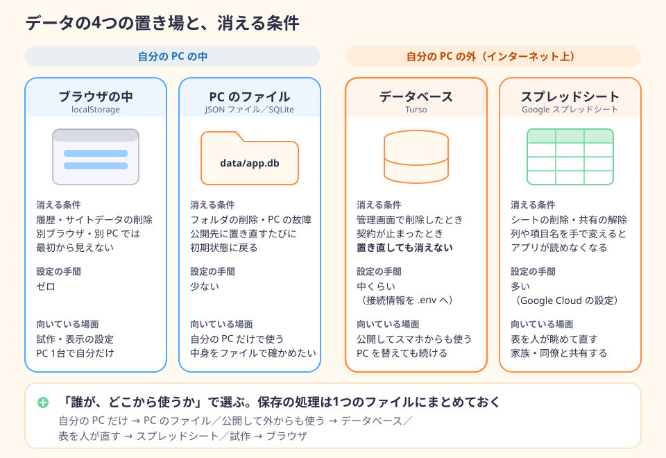
6-1. ブラウザの中に持つ（localStorage）
ブラウザには、サイトごとに小さなデータを保存しておく領域があり、その1つが localStorage です。JavaScript から「名前」と「文字列」の組で読み書きでき、ブラウザを閉じても残ります。サーバーが無くても動くので、画面側だけで完結します。
用語
- localStorage
- ブラウザがサイト（アドレスの
http://localhost:3000の部分。ポート番号まで含む）ごとに持っている保存領域。名前と文字列の組を保存します。容量は数 MB 程度で、同じ PC の同じブラウザで、同じアドレスから開いたときだけ読めます。 - キャッシュ
- 表示を速くするために、ブラウザが画像やファイルの写しを一時的に持っておく仕組み。いつ消されてもよい前提のものなので、データの保存には使いません。localStorage はキャッシュとは別の領域で、ふつうは利用者が消すまで残ります。ただし PC の空き容量が足りないときや、Safari で7日ほどそのページを開かなかったときは、ブラウザが消すことがあります。
- どこにあるか
- 自分の PC の、そのブラウザの中
- 消える条件
- ブラウザの「閲覧履歴データの削除」でサイトデータを消したとき／PC の空き容量が足りなくなり、ブラウザが古いサイトのデータを消したとき／Safari で7日ほどそのページを開かなかったとき。別のブラウザ・別の PC・シークレットウィンドウでは最初から見えません。アドレスのポート番号が変わったとき（
:3000が:5173になったなど）・公開して別のアドレスで開いたときも、前のデータは見えません - 設定の手間
- ゼロ。Claude Code に「localStorage に保存して」と言えば動きます
- 向いている場面
- 試作／表示の設定（並び順・テーマ）／PC 1台・ブラウザ1つで自分だけが使う小さな記録
file:// で始まる）にブラウザの中へデータを残していても、サーバーから開いた画面（http://localhost:3000 など）には出てきません。なぜ：ブラウザは、アドレスの始まり（file:// か http://localhost:3000 か。ポート番号まで含む）ごとに、別の置き場として扱うためです。ポート番号を変えたとき（:3000 が :5173 になったなど）も同じで、前のアドレスで残したデータは見えません。データは消えたのではなく、前のアドレスの置き場に残っています。
なぜ本番の記録には向かないのか：「履歴を削除」の操作で、貯めた記録がまとめて消えます。使う人はそれが記録の削除だとは思っていません。また、スマホから見たいと思ったときに、PC のブラウザの中にあるデータは取り出せません。
記録の保存先を localStorage にしてください。 保存する項目は docs/spec.md の「扱うデータ」のとおりです。 保存・読み出しの処理は、画面側の1つのファイル（例：app/storage.js）にまとめてください。 完成条件：記録を1件登録してブラウザを再読み込みしても残っていること。開発者ツールの「アプリケーション」→「ローカルストレージ」に保存した内容が見えること。
6-2. 自分の PC のファイルに持つ（JSON ファイル／SQLite）
サーバー側のプログラムが、アプリのフォルダの中のファイルにデータを読み書きします。ファイルの形は、JSON ファイル1つ（data.json）か、SQLite のファイル1つ（data.db）です。
用語
- SQLite
- データを1つのファイルに表の形で保存する仕組み。検索や並べ替えを SQL という決まった書き方で頼めます。別のプログラムを起動しておく必要がありません。
- SQL
- データベースに「この条件の行を取り出して」「この行を書き換えて」と頼むための、決まった書き方の文。
- バックアップ
- データの写しを別の場所に取っておくこと。ファイルに持っている場合は、そのファイルをコピーするだけで済みます。
- デプロイ
- 作ったアプリを、インターネット上の公開用のサービスに置いて動かすこと。コードを直して置き直すことも、デプロイと呼びます。
- どこにあるか
- 自分の PC の、アプリのフォルダの中（
data/などに置く） - 消える条件
- そのファイルやフォルダを消したとき／PC が壊れたとき／アプリをインターネット上のサービスに公開した場合、置き直すたびにファイルが初期状態に戻ることが多い
- 設定の手間
- 少ない。Node.js の標準機能か、SQLite の部品を1つ入れるだけ
- 向いている場面
- 自分の PC だけで使うアプリ／中身をファイルとして開いて確かめたい／バックアップをコピーで済ませたい
なぜ公開すると消えるのか：アプリを動かしてくれる公開用のサービスの多くは、コードを置き直す（デプロイする）たびに、動かす場所をまっさらな状態から作り直します。その中に作ったファイルは、次の置き直しで無くなります。外からも使いたいアプリのデータは、アプリ本体とは別の場所（次の 6-3）に置く必要があります。
JSON ファイルと SQLite のどちらか：件数が少なく項目が単純なら JSON ファイルで足ります。件数が増えて「先月の分だけ」「金額の多い順」のような絞り込みや並べ替えを頻繁にするなら SQLite です。あとで 6-3 のデータベースに移す予定があるなら、最初から SQLite にしておくと、同じ SQL が使えるので、移すときに変える場所が主に接続の部分で済みます。
記録の保存先を、アプリのフォルダ内の SQLite ファイル（data/app.db）にしてください。 保存・読み出しの処理はサーバー側の1つのファイルにまとめ、画面側からは自分のサーバーを呼ぶだけにしてください。 .gitignore に data/ を追加してください。 完成条件：記録を1件登録して、5-1 で起動したサーバーを止めて起動し直しても残っていること。
なぜ data/ を .gitignore に入れるのか：記録の中身はご自身の生活や仕事のデータで、コードと一緒に共有する場所へ上げるものではないからです。
6-3. インターネット上のデータベースに持つ（Turso）
データベースは、データを表の形で保存し、検索・並べ替え・書き換えを専門に担当するプログラムです。Turso は、6-2 で使った SQLite をインターネット上で動かしてくれるサービスで、自分のサーバーからは接続用の URL とトークンを使ってつなぎます。
用語
- データベース（DB）
- データを表の形で保存し、検索・並べ替え・書き換えを担当する専用のプログラム。アプリ本体とは別の場所に置けます。
- Turso
- SQLite をインターネット上のサービスとして提供しているもの。手元の SQLite と同じ SQL が使えます。
- 接続情報
- データベースにつなぐための「場所（URL）」と「本人確認のトークン」。API キーと同じく
.envに置き、サーバー側からだけ使います。 - トークン（Turso）
- データベースにつなぐための本人確認の文字列。Turso の管理画面で発行します。02 で出てきた、AI の料金を数える「トークン」とは別のものです。
- どこにあるか
- Turso のサーバー（自分の PC の外）
- 消える条件
- Turso の管理画面でデータベースを消したとき（消したデータベースは無料プランでは戻せません）／契約が止まったとき。アプリを置き直しても消えません。PC を替えても同じデータを見られます。無料プランでは、しばらく使わないとデータベースが休止し、つながらなくなることがあります（データは残っていて、休止を解けばまた使えます）
- 設定の手間
- 中くらい。Turso のアカウント作成 → データベース作成 → 接続情報を
.envへ → サーバー側の接続先を変更 - 向いている場面
- アプリを公開してスマホからも使う／PC を替えてもデータを引き継ぐ／件数が増える見込み
なぜ Turso なのか（ほかの選択肢と、なぜ今回それを選ばないか）
- 手元の SQLite と同じ SQL が使えます。6-2 で SQLite にしておけば、変える場所は主に接続の部分です（使う部品の違いで、少し直しが入ることがあります）。保存・読み出しの処理を一から書き直さずに済みます
- Supabase や Firebase には、画面側から直接データベースにつなぐ使い方が多くあります。この作りは便利ですが、アクセス制限の設定を1つ誤ると、データが誰からでも読める状態になります。このゼミでは「データベースにつなぐのはサーバー側だけ」という作りに統一し、その形が自然に取れる Turso にします
- 無料で使える範囲がありますが、内容は変わることがあります。2026年10月2日に、Turso は Supabase に加わると発表しました（サービスは続くと案内されています。料金・無料プラン・画面がいつ変わるかは、2026年10月3日時点で発表されていません）。画面やプランが変わることがあるので、最新は Turso の公式ページでご確認ください
Turso を用意する手順
- 1
app.turso.tech を開き、GitHub か Google のアカウント、またはメールアドレスでログインする
アカウントが無ければ Sign up から作ります。なぜ：データベースと接続用のトークンは、このアカウントに紐づきます。
- 2
左上の「Create Database」を押し、名前を付けて「Create Database」
名前はアプリ名と同じにしておくと迷いません。Group は「default」のままで構いません。Group の横に地域が出るので、Tokyo（AWS AP NorthEast）になっているか見ておきます。なぜ：Group はデータベースを置く地域のまとまりで、近い地域のほうが応答が速いためです。違っていても動きます。
- 3
作ったデータベースの名前を押して「Overview」を開き、「Connect」の枠の接続用 URL（Database URL）をコピーして、
.envにTURSO_DATABASE_URL=コピーしたURLの1行を足すURL は
libsql://で始まります。.envの開き方は 03 と同じです。なぜ：サーバーがどのデータベースにつなぐかを、この URL で決めるためです。URL だけではつながらないので、次の手順でトークンも作ります。名前（TURSO_DATABASE_URL）は公式の案内に合わせた例です。 - 4
同じ枠の「Create Token」を押し、有効期限と権限（Read & Write）を選んで「Create Token」。表示されたトークンを、
.envにTURSO_AUTH_TOKEN=表示されたトークンの1行で足すトークンは API キーと同じ扱いです。画面を閉じる前に貼ります。なぜトークンか：URL を知っているだけでは接続できないようにするためです。URL とトークンの両方が揃って初めてつながります。
- 5
Claude Code に、サーバー側の保存先を Turso にさせる
6-2 の SQLite で保存を作ってある方は「SQLite から切り替える場合」、まだ保存を作っていない方は「初めて保存を作る場合」の指示の型を、どちらか1つだけ貼ります。なぜ2つあるのか：すでにある保存の処理を生かすか、一から作るかで、頼む内容が違うためです。
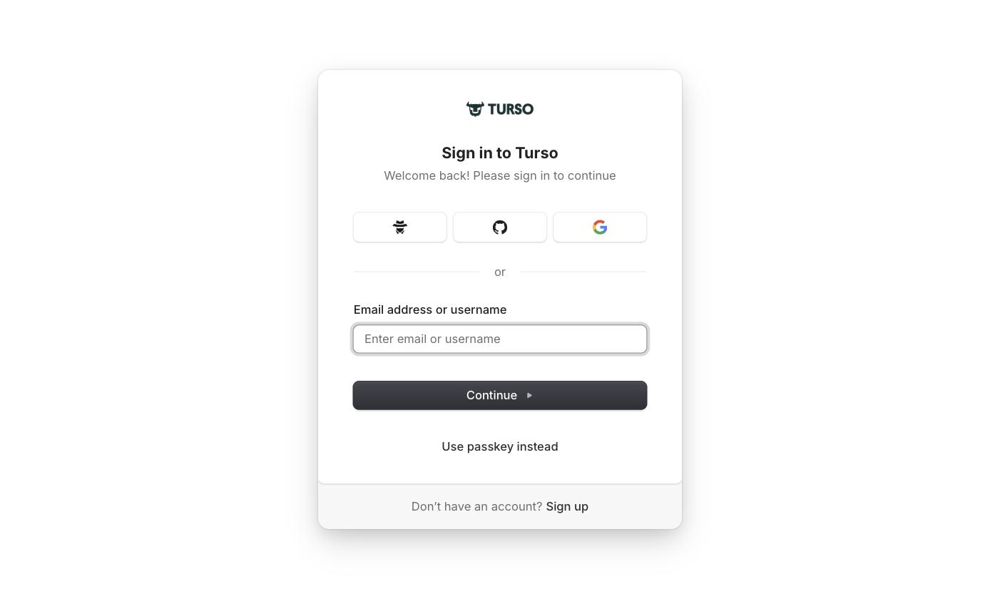
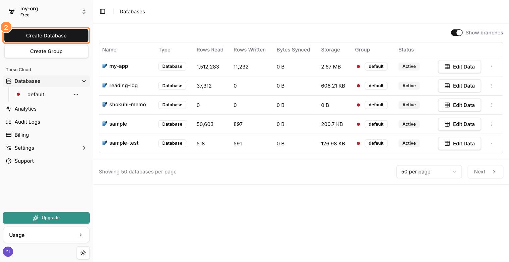
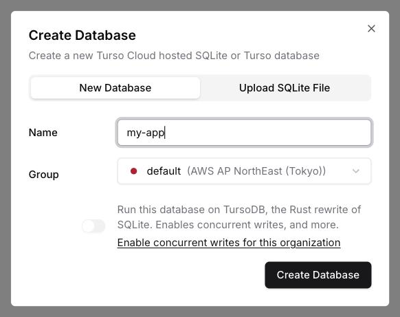
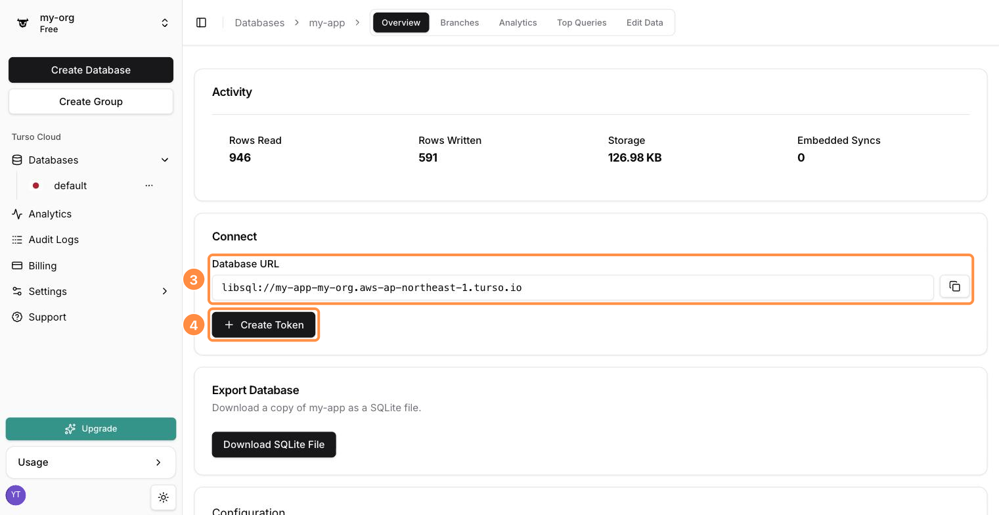
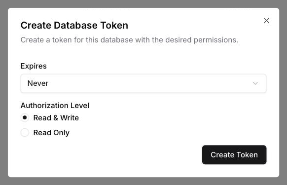
SQLite から切り替える場合：
保存先を、手元の SQLite ファイルから Turso に切り替えてください。 接続情報は .env の TURSO_DATABASE_URL と TURSO_AUTH_TOKEN から読み、サーバー側からだけ使ってください。.env の中身は開いて読まないでください。 保存・読み出しの処理（SQL）はできるだけそのまま使い、接続の部分を差し替えてください。部品の違いで SQL や処理を直す必要があれば、直す前に箇所を教えてください。 完成条件：記録を1件登録して、Turso の管理画面でその行が見えること。サーバーを止めて起動し直しても残っていること。
初めて保存を作る場合：
記録の保存先を Turso にしてください。 保存する項目は docs/spec.md の「扱うデータ」のとおりです。 接続情報は .env の TURSO_DATABASE_URL と TURSO_AUTH_TOKEN から読み、サーバー側からだけ使ってください。.env の中身は開いて読まないでください。 保存・読み出しの処理はサーバー側の1つのファイルにまとめ、画面側からは自分のサーバーを呼ぶだけにしてください。 完成条件：記録を1件登録して、Turso の管理画面でその行が見えること。サーバーを止めて起動し直しても残っていること。
確認：データベースの画面の「Edit Data」を開くと、保存した表の中身を直接見られます。アプリで1件登録して、ここでその行が見えれば、PC の外に保存されています。
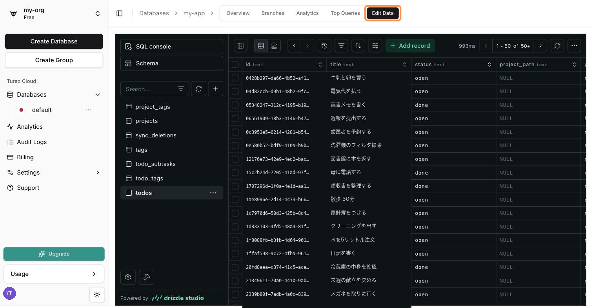
6-4. スプレッドシートに持つ（Google スプレッドシート）
データを Google スプレッドシートの表に持ち、サーバー側から Google の API を通して読み書きします。1行が1件、1行目が項目名という形にします。
用語
- Google スプレッドシート
- Google が提供している、ブラウザで使う表計算のサービス。Excel と同じような表を、インターネット上に持ちます。
- サービスアカウント
- 人ではなくプログラムが Google のサービスを使うための専用アカウント。Google Cloud の管理画面で作り、認証用のファイル（JSON）を受け取ります。このファイルも API キーと同じ扱いで、共有の場所に上げません。
- CSV
- 表の中身をカンマ区切りの文字で書き出したファイル。スプレッドシートや Excel で開けます。
- どこにあるか
- Google のサーバー（自分の Google ドライブの中）
- 消える条件
- シートを消したとき／サービスアカウントとの共有を外したとき／列の並びや項目名を手で変えたとき（アプリが読めなくなります）
- 設定の手間
- 多い。Google Cloud でプロジェクトとサービスアカウントを作る → 認証用のファイルを受け取る → シートをそのアカウントに共有する → サーバー側で API を呼ぶ
- 向いている場面
- 一覧を人が眺めて手で直したい／すでにスプレッドシートで管理している作業の続き／家族や同僚と同じ表を見たい
なぜスプレッドシートが選ばれるのか：アプリを作る前からスプレッドシートで管理していた作業なら、これまでの表をそのまま使えます。表を眺めて直すのは、専用の画面を作るより速いです。集計やグラフも、スプレッドシート側の機能で済みます。
なぜ本番のデータベースの代わりにはならないのか
- 読み書きのたびに Google の API へ通信するので、1回の操作に時間がかかります（体感で分かる程度）
- 短時間に何度も書き込むと回数の上限に当たります
- 人が表を直接編集できるのが利点でもあり、列を1つ動かしただけでアプリが読めなくなる弱点でもあります
記録の保存先を Google スプレッドシートにしてください。 シートの ID は .env の SHEET_ID から、サービスアカウントの認証ファイルの場所は .env の GOOGLE_APPLICATION_CREDENTIALS から読み、サーバー側からだけ使ってください。.env と認証用の JSON ファイルの中身は開いて読まないでください。 認証用の JSON ファイルの名前を .gitignore に追加してください。 1行目を項目名（docs/spec.md の「扱うデータ」の項目名）、2行目以降を1件1行にしてください。 完成条件：アプリで1件登録すると、シートに1行増えること。シートで直した内容がアプリの一覧に反映されること。
なぜ認証用の JSON ファイルを .gitignore に入れるのか：このファイルを持っていれば、誰でもそのサービスアカウントとして、共有したシートを読み書きできるためです。提出する zip にも入れません。
6-5. 4つの比較と、選び方
| 置き場 | どこにあるか | 消える条件 | 設定の手間 | 向いている場面 |
|---|---|---|---|---|
| ブラウザの中（localStorage） | 自分の PC のブラウザ | 履歴削除／容量不足や Safari で長く開かないとブラウザが消す／別ブラウザ・別 PC・別のアドレス（ポート番号）では見えない | ゼロ | 試作・設定値・PC 1台で自分だけ |
| PC のファイル（JSON／SQLite） | アプリのフォルダ | フォルダ削除／PC 故障／公開先で置き直すと初期化 | 少ない | 自分の PC だけで使う |
| データベース（Turso） | インターネット上 | 管理画面で削除／契約停止／無料プランは長く使わないと休止（データは残る） | 中くらい | 公開してスマホからも使う・PC を替える |
| スプレッドシート | Google ドライブ | シート削除／共有解除／列の手直し | 多い | 表を人が眺めて直す・共有 |
表は横にスクロールできます
選び方：まず「誰が、どこから使うか」で決めます。
- 自分の PC だけで使う → PC のファイル。SQLite にしておけば、あとで Turso に移せます
- 公開して外からも使う、PC を替えても続ける → Turso
- 表を人が直接眺めて直す、家族と共有する → スプレッドシート（まずは CSV 書き出しで足りないかを考えます）
- 試作や、並び順のような表示の設定だけ → localStorage
app/storage.js）にまとめます。置き場の違いは、そのファイルの中だけに閉じ込めます。
なぜ：置き場を変えるとき、直す場所が1つで済みます。画面側にまで保存の処理が散らばっていると、置き場を変えるたびにアプリ全体を作り直すことになります。
決めたら docs/spec.md の「使う技術」の「保存の仕組み」の行を書き換えます（Claude Code に「docs/spec.md の保存の仕組みを Turso に書き換えてください」と指示すれば済みます）。なぜ：仕様書と実物がずれたままだと、次に Claude Code に指示したとき、古い保存先の前提でコードが作られます。
Deliverables
この回で作るもの
この回の到達点は次の4つです。提出のしかたは commmune のゼミスレッドで案内します（提出の期限は Home の「ゼミのルール・修了要件」）。演習サイト Boarding Pass の理解度チェックもあります。
用語
- commmune
- DMM 生成AI CAMP の受講生向けコミュニティサイト。ゼミごとのスレッドで課題や連絡を案内します。
AI 機能（1つ）が動いている自分のアプリ
入力と出力の両方が見えるスクリーンショットと、ソース一式の zip。使ったサービスの名前も書きます。
zip は Claude Code に「.env・node_modules・data/・認証用の JSON ファイルを除いて zip にしてください。できたら zip の中身の一覧を表示してください」と頼んで作り、一覧に .env が無いことを見てから出します。なぜ：.env が入ったまま出すと、キーをそのまま渡すことになります。
管理画面の上限設定のスクリーンショット
Claude：「請求」の画面で、クレジット残高と、自動リロードがオフであること・「Spend limits」の月の上限が見えるもの。
OpenAI：「Limits」の「Spend」の欄で、月の上限額と「Enforce a hard limit」がオンになっていることが見えるもの。
Gemini：支払いを設定した方は、「利用額」の月の使用上限が見えるもの。無料枠のまま使う方は、「利用額」に「請求先が設定されていません」と出ている画面（4-3 の画像の例）。
キーの全文が写っていないことを見てから撮ります。
.gitignore に .env が入っていることが分かるスクリーンショット
.gitignore を開いた画面。.env と node_modules の行が見えていれば十分です。
選んだ置き場に保存が残る画面と、書き換えた docs/spec.md
選んだ置き場に1件保存し、再読み込み（または、サーバーを止めて起動し直し）しても残っている画面のスクリーンショット。
docs/spec.md は、「使う技術」の「保存の仕組み」の行が選んだ置き場になっている状態で、選んだ理由を1行、ご自身の言葉で添えます。
Pitfalls
よくあるつまずきと対処
詰まったら、Home の「分からないことが出てきたらこの順番で」の順（スクショを撮って AI に聞く → ゼミ掲示板）で進めてください。スクショを撮るときは、キーが写っていないかを先に見ます。
キーが漏れた（画面側に書いた・スクショに写した）
他人がご自身の請求で使えてしまいます。
対処：03 の「キーが写ってしまったときの対処」のとおりです（まだどこにも貼っていなければ撮り直し、一度でも出したら無効化して作り直す）。画面側に書いた場合は、無効化して作り直し、キーを使う処理をサーバー側へ移します。
キーを GitHub など共有の場所に上げてしまった
あとからファイルを消しても、上げた記録（履歴）から誰でも読めます。
対処：管理画面でそのキーを無効化して作り直すことだけが対処です。消して上げ直しても、前のキーは読めるままです。作り直したら、.gitignore に .env が入っていることを確かめてから続けます。
前は動いていたのに、急に認証エラー（401）が出るようになった
キーの有効期限が切れています（Claude はキーを作るときに有効期限を決めます）。
対処：管理画面のキーの一覧で有効期限を確かめ、切れていたら新しいキーを作って .env に貼り直し、サーバーを起動し直します。古いキーは無効化しておきます。
課金が膨らんでいる
再描画のたびに呼ぶ作りや連打で、回数が桁違いになっています。
対処：上限設定を先に確認。「ボタンを押したときだけ呼ぶ」「押している間は押せなくする」を指示します。使用量の画面を毎日見ます。
経路を先に通す手順を飛ばした
動かないとき、原因が経路か AI かの2つあって抜けられません。
対処：いったん「テスト応答です」を返す状態に戻して経路を確かめ、通ってから差し替え直します。
サーバーから開いたら、ボタンを押しても動かない（ダブルクリックで開いていたときは動いた）
JavaScript のファイル（例：app/app.js）が読み込まれていないか、サーバーが返すフォルダと、HTML に書いた読み込み先がずれています。
対処：5-1 の「いままでの動きを、サーバーから開いた画面で確かめる」の型で、したこと・起きたこと・コンソールの赤い文字を渡し、まず原因を聞きます。直させるときは「いまの動きと見た目は変えないでください」と添えます。
ai.js の中身を差し替えたら、「処理中」の表示が出なくなった（失敗したときの表示が出ない）
入口がすぐに答えを返して一瞬で終わっているか、入口が返したエラーを、関数が失敗として扱っていません。
対処：「サーバー側の入口は、1秒待ってから返すようにしてください」「入口がエラーを返したときは、いまと同じく失敗として扱ってください。ほかは変えないでください」のうち、当てはまるほうを頼みます。サーバーを起動していないと、どの入力でも失敗したときの表示が出ます。そのときは、5-1 で教えてもらった起動のしかたで起動します。
契約・支払い登録で止まる
この回の作業に入れません。
対処：契約〜キーの発行は LIVE講義の前に済ませておきます。詰まったらスクショ（キーは伏せる）を撮って AI に聞く → ゼミ掲示板の順で。
ChatGPT や Claude の有料プランで、API も使えると思っていた
残高が無い（insufficient_quota、429 など）と返って止まります。
対処：月額プランと API は別の製品で、支払いも別です。OpenAI は OpenAI Platform の「Billing」で、Claude は Claude Platform の「請求」で、API 用のクレジットを買います（4-1・4-2）。
.env を直したのに反映されない
認証エラーが続きます。
対処：5-1 で起動したサーバーを、5-1 で教えてもらった止め方（多くはターミナルで Ctrl＋C）で止めて起動し直します（.env は起動時にしか読まれません）。それでも直らなければ、05 のエラーの表の「キーが undefined」の行を見ます。
モデル名のエラーが出る
404 や model not found が返ります。
対処：公式ページで現在の名前を確認し、1箇所にまとめた場所を直します。Gemini で no longer available to new users と出たときは 2.5 系を呼んでいるので、4-3 の注記のモデル名に直します。
出力が毎回違う
表示が崩れる・合っているか確認できません。
対処：形式を指示文で指定し、守られなかったときの表示を用意します。「形式が守られているか」で確認します。
localStorage に本番の記録を貯めてしまった
履歴削除で消える・スマホから見えません。
対処：6-2 か 6-3 に移します。保存の処理が1つのファイルにまとまっていれば、直す場所は1つです。
サーバーから開いたら、前に入れたデータが無い
ダブルクリックで開いていたとき（アドレスが file://）と、サーバーから開いた画面（http://localhost:3000 など）では、ブラウザの中のデータの置き場が別です（ポート番号まで含めて、アドレスの始まりごとに分かれます）。データを残す処理をまだ作っていない場合は、再読み込みで最初の状態に戻るのが正しい動きです。
対処：前のアドレスで残したデータは、消えたのではなく、前の置き場に残っています。06 で置き場を決めてから、サーバーから開いた画面で入れ直します（6-1 の注記）。
公開したら記録が消えた
公開先で置き直すたびにファイルが初期化されています。
対処：データはアプリ本体と別の場所（Turso）へ移します。
しばらくぶりに開いたら、Turso につながらない
無料プランでは、しばらく使わないとデータベースが休止します。データは消えていません。
対処：Turso の管理画面でそのデータベースを開き、休止している表示が出ていれば、戻す操作をします。見つからなければ、画面のスクショを撮って AI に聞きます。
スプレッドシートの列を手で動かしてアプリが読めなくなった
一覧が空になる・エラーになります。
対処：1行目の項目名と列の並びは変えません。変えるなら仕様書を直して Claude Code に読み直させます。
社外に出せない情報を AI に送っていた
情報の持ち出しになります。
対処：送る項目を Claude Code に一覧させて確認します。開発中は架空のデータで進めます。Gemini の無料枠では、送った内容が Google の製品の改善に使われます（05 の注意）。
Glossary
この回で出てきた用語
| 用語 | 意味 |
|---|---|
| API | Application Programming Interface の頭文字。プログラムから別のプログラムやサービスの機能を呼び出すための、決められた呼び出し方 |
| API 連携 | 自分のアプリの中から外部サービスの API を呼び出して、その結果を自分の画面に使うこと |
| リクエスト／レスポンス | API に送る要求と、返ってくる答え |
| URL | インターネット上の場所を表す文字列。API では要求の送り先 |
| JSON | データを決まった書き方の文字で表す形式。項目名と値の組で書く |
| 画面側（フロントエンド） | ブラウザの中で動く部分。中身は開発者ツールで誰でも見られる |
| サーバー側（バックエンド） | 利用者から見えない場所で動く部分。秘密の文字列を使う処理とファイルの読み書きはここで行う |
| 開発者ツール | ブラウザに標準で付いている、画面の中身・通信・エラーを調べる機能 |
| ネットワークの欄 | 開発者ツールの中で、ブラウザが送った要求と答えを一覧で見られる画面 |
| API キー | サービスが発行する本人確認用の長い文字列。使うと請求が来るパスワード |
| .env | 秘密の文字列を書いておくファイル。アプリのフォルダ直下に置き、.gitignore に入れる |
| 環境変数 | プログラムの外側から渡す設定値。.env の内容は起動時に環境変数として読み込まれる |
| .gitignore | 共有の場所に上げないファイルの名前を書いておく一覧 |
| node_modules | アプリが使う部品（ライブラリ）を入れるフォルダ。作り直せるので共有や提出には含めない |
| モデル | 呼び出す AI の種類。名前を指定して呼び分ける。名前は変わる |
| トークン（AI の） | AI のサービスが文章を数える単位。料金の元になる |
| 無料枠 | 無料で使える範囲。サービスごとに違い、変わる |
| 上限設定 | 管理画面で「月あたりここまで」と決めておく設定。超えたときに止まるか通知だけかは、サービスと設定で違う |
| レート制限 | 短い時間に送れる要求の回数の上限 |
| 前払い（クレジット） | 先に金額を入れておき、その範囲で使う方式。自動リロードがオフなら、残高が上限を兼ねる |
| 自動リロード | 残高が少なくなると自動でクレジットを買い足す設定。入れると残高が上限の役目をしなくなる |
| Google Cloud のプロジェクト | Google のサービスで、キー・使用量・請求をまとめる単位 |
| ステータスコード | API が答えと一緒に返す3桁の番号。401＝キーが違う、404＝見つからない、429＝回数や残高の上限 |
| 動き | 操作（押す・入れる）を受け取って、画面の中身を書き換える仕組み。画面側の JavaScript で作る |
| 動きの一覧（docs/actions.md） | 画面に付ける動きを1行に1つずつ並べた表。状態は「まだ」「作った」「あとで」、確かめる手順は「確かめ方」の欄にある |
| 仮の文章 | 本物の AI の代わりに返す、決まった文章。AI につなぐ前に、押す → 待つ → 出るの流れを確かめるのに使う |
| モック | 見た目だけを作った画面。動きや保存の仕組みは入っていない |
| Node.js | JavaScript をブラウザの外（PC の上）で動かすための土台のソフト。サーバー側のプログラムを動かすのに使う |
| localhost | 自分の PC 自身を指す名前。http://localhost:3000 は自分の PC の中で動いているサーバーの 3000 番の入口を表す |
| コンソール | 開発者ツールの中の、JavaScript のエラーや記録が文字で出る欄。止まった理由が赤い文字で出る |
| 関数 | ひとまとまりの処理に名前を付けたもの。名前と、受け取るもの・返すものの形が同じなら、中身を差し替えても呼ぶ側は直さずに済む |
| 公式のライブラリ | 各サービスが配布している、API を呼ぶためのプログラムの部品 |
| 待機中の表示 | 処理が終わるまで進行中であることを画面に出すこと |
| ターミナル | 文字で PC に命令する画面。起動したサーバーのメッセージやエラーが出る |
| 消える条件 | その置き場のデータが無くなる操作や状況 |
| 永続化 | ブラウザを閉じても PC を再起動しても残るように保存すること |
| localStorage | ブラウザがサイト（ポート番号まで含むアドレス）ごとに持つ保存領域。同じ PC の同じブラウザで、同じアドレスから開いたときだけ読める。容量不足などでブラウザが消すこともある |
| キャッシュ | 表示を速くするための一時的な写し。いつ消されてもよい前提なので保存には使わない |
| SQLite | データを1つのファイルに表の形で保存する仕組み |
| SQL | データベースに取り出し・書き換えを頼む決まった書き方の文 |
| バックアップ | データの写しを別の場所に取っておくこと |
| データベース（DB） | データを表の形で保存し、検索・並べ替え・書き換えを担当する専用のプログラム |
| Turso | SQLite をインターネット上のサービスとして提供しているもの |
| 接続情報 | データベースにつなぐための URL とトークン。.env に置く |
| トークン（Turso） | データベースにつなぐための本人確認の文字列。AI の料金を数える「トークン」とは別 |
| デプロイ | 作ったアプリを公開用のサービスに置いて動かすこと |
| Google スプレッドシート | ブラウザで使う表計算のサービス |
| サービスアカウント | プログラムが Google のサービスを使うための専用アカウント。認証用ファイルは共有の場所に上げない |
| CSV | 表の中身をカンマ区切りの文字で書き出したファイル |
表は横にスクロールできます